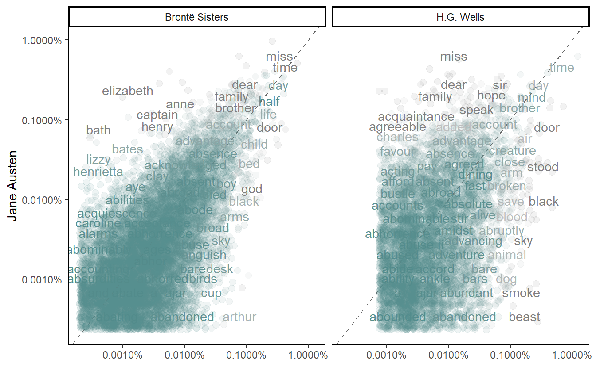

1.1 gutenbergr
hgwells <- gutenberg_download(c(35, 36, 5230, 159))
hgwells
#> # A tibble: 20,596 x 2
#> gutenberg_id text
#> <int> <chr>
#> 1 35 "The Time Machine, by H. G. Wells [1898]"
#> 2 35 ""
#> 3 35 ""
#> 4 35 ""
#> 5 35 ""
#> 6 35 "I"
#> # ... with 2.059e+04 more rows
tidy_hgwells <- hgwells %>%
unnest_tokens(word, text) %>%
anti_join(stop_words)bronte <- gutenberg_download(c(1260, 768, 969, 9182, 767))
tidy_bronte <- bronte %>%
unnest_tokens(word, text) %>%
anti_join(stop_words)df <- bind_rows(mutate(tidy_bronte, author = "Brontë Sisters"),
mutate(tidy_hgwells, author = "H.G. Wells"),
mutate(tidy_books, author = "Jane Austen")) %>%
mutate(word = str_extract(word, "[a-z']+")) %>%
count(author, word) %>%
group_by(author) %>%
mutate(proportion = n / sum(n))
df
#> # A tibble: 48,018 x 4
#> # Groups: author [3]
#> author word n proportion
#> <chr> <chr> <int> <dbl>
#> 1 Brontë Sisters a 8 0.0000319
#> 2 Brontë Sisters a'most 4 0.0000159
#> 3 Brontë Sisters aback 1 0.00000398
#> 4 Brontë Sisters abaht 1 0.00000398
#> 5 Brontë Sisters abandon 8 0.0000319
#> 6 Brontë Sisters abandoned 23 0.0000916
#> # ... with 4.801e+04 more rowsdf %>%
select(-n) %>%
pivot_wider(names_from = author, values_from = proportion) %>%
pivot_longer(names_to = "author", values_to = "proportion", `Brontë Sisters`:`H.G. Wells`)
#> # A tibble: 57,818 x 4
#> word `Jane Austen` author proportion
#> <chr> <dbl> <chr> <dbl>
#> 1 a 0.00000919 Brontë Sisters 0.0000319
#> 2 a 0.00000919 H.G. Wells 0.0000150
#> 3 a'most NA Brontë Sisters 0.0000159
#> 4 a'most NA H.G. Wells NA
#> 5 aback NA Brontë Sisters 0.00000398
#> 6 aback NA H.G. Wells 0.0000150
#> # ... with 5.781e+04 more rows
frequency <- df %>%
select(-n) %>%
pivot_wider(names_from = author, values_from = proportion) %>%
pivot_longer(names_to = "author", values_to = "proportion", `Brontë Sisters`:`H.G. Wells`) %>%
janitor::clean_names()
ggplot(frequency, aes(x = proportion, y = jane_austen, color = abs(jane_austen - proportion))) +
geom_abline(color = "gray40", lty = 2) +
geom_jitter(alpha = 0.1, size = 2.5, width = 0.3, height = 0.3) +
geom_text(aes(label = word), check_overlap = TRUE, vjust = 1.5) +
scale_x_log10(labels = scales::percent) +
scale_y_log10(labels = scales::percent) +
scale_color_gradient(limits = c(0, 0.001), low = "darkslategray4", high = "gray75",
guide = FALSE) +
facet_wrap(~ author, ncol = 2) +
labs(y = "Jane Austen", x = NULL) +
theme_classic() 